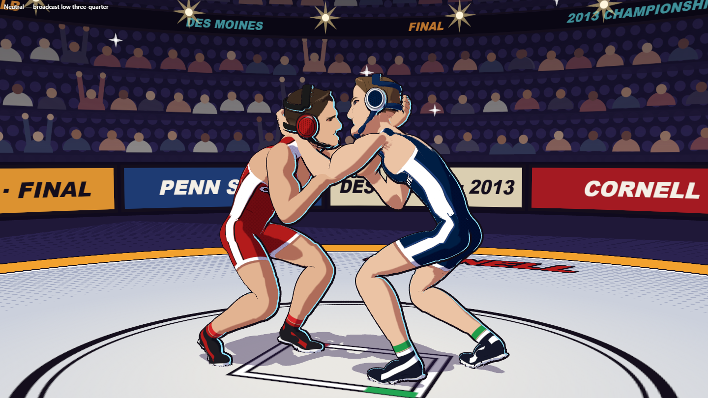
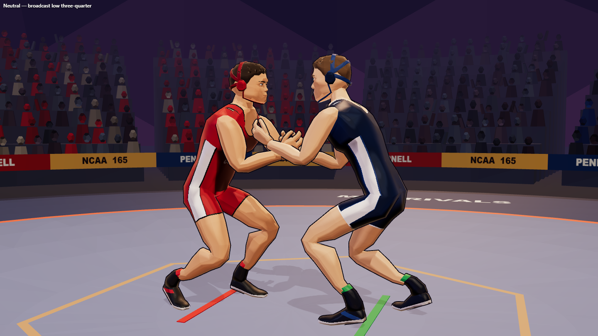
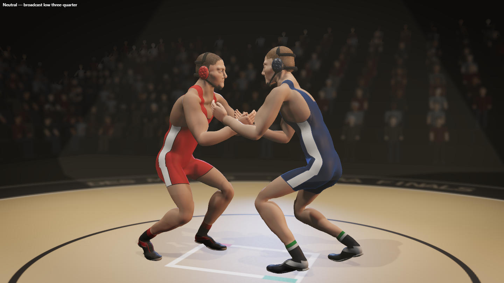
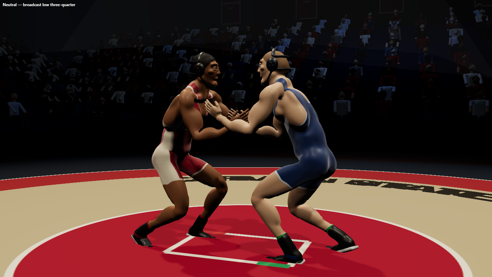
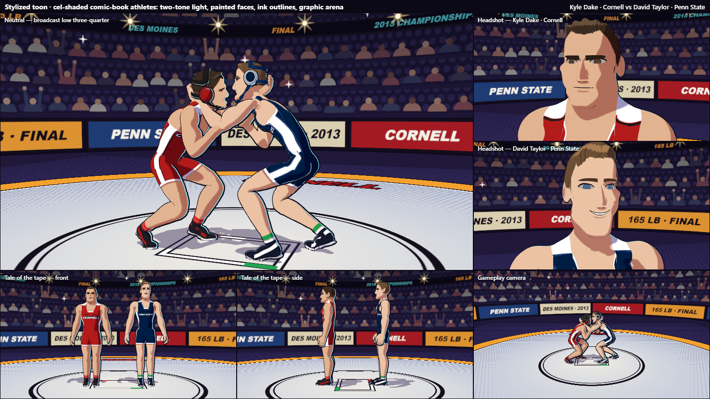
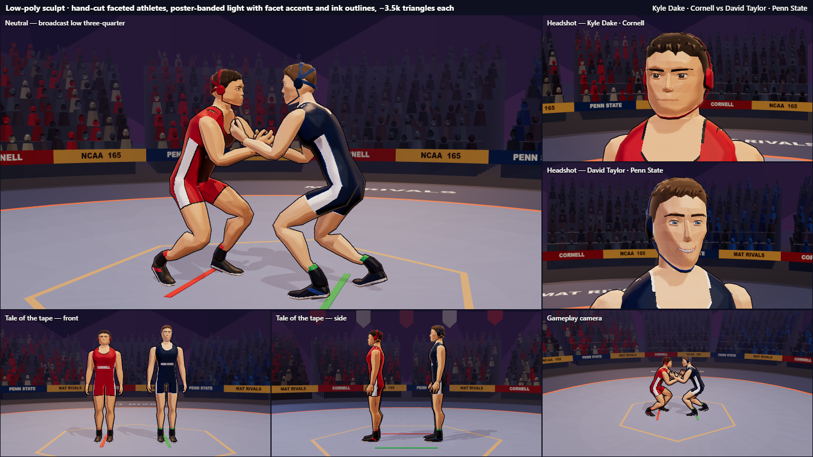
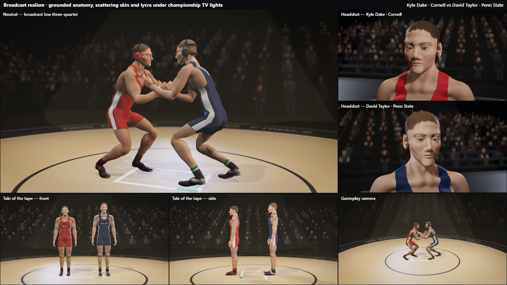
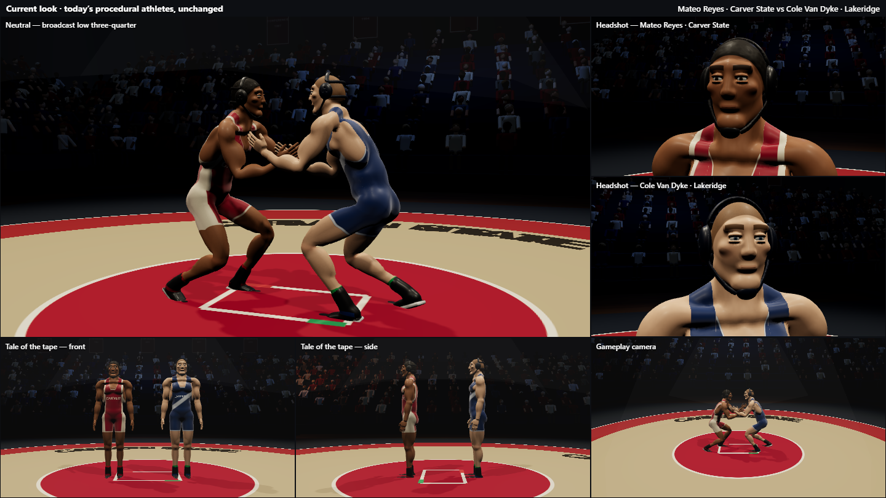

Mat Rivals — character style options
Three art directions for the wrestlers, each shown with the same six shots of Kyle Dake (Cornell) vs David Taylor (Penn State), the 2013 NCAA 165 lb final that Dake won 5–4. Every pose runs through the game's own animation solver, so each style can drop into the real game. Scores come from an independent art-director review, out of 10.
Side by side — the match shot




1 · Stylized toon
7.5 / 10Cel-shaded comic-book look with ink outlines and a graphic arena
Strengths
- The most appealing of the three: it looks like a finished game.
- Athletic, clearly different builds: compact, thick-necked Dake vs long, rangy Taylor. That fixes the "weird body types" problem.
- Taylor is recognizable from his grin.
- Easiest to read at the gameplay camera.
Weak spots
- Dake's likeness is the weakest part: a generic swept-back hero haircut and a long lower face. He needs a short dark crop and a broader face.
- The chin strap reads as a scruffy beard in the match shots.
- The ink outlines still need testing in mat wrestling, where bodies overlap.
Triangles / athlete150–170k (high), ~80k (low)
Build time / body~1.9 s (move to worker)
PhonesUse the low setting
Effort to shipMedium
The match shots in this style use a collar-tie pose instead of the plain neutral stance, so some of its energy comes from the pose rather than the rendering.
2 · Low-poly sculpt
7 / 10Faceted athletes with banded poster lighting, ~3.7k triangles each
Strengths
- Clean and deliberate: it looks like a style choice, not a decimated mesh.
- By far the cheapest to run: about 3.7k triangles per body, 10–30 ms to build, no worker needed. Ideal for phones.
- Dake is most recognizable here: short dark crop and a stern, broad face. Taylor's grin works too.
- Faceted shapes hide animation imperfections well.
Weak spots
- A notch less premium and less expressive than the toon style.
- The chest plates read as rounded mounds, worst on Dake.
- Mitten hands up close, and Taylor's neck looks thin from the front.
- The mat center is a hexagon (should be a circle), and the crowd is a bit dim.
Triangles / athlete~3.7k
Build time / body10–30 ms
PhonesExcellent
Effort to shipLow–medium
3 · Broadcast realism
3.5 / 10Grounded anatomy, skin shading and lycra under TV lights
Strengths
- Bodies and arena hold up well at match distance (see the side-by-side): human proportions, believable lighting.
- A big improvement over today's rubbery bodies.
Weak spots
- Close-up faces fall into the uncanny valley, and neither man is recognizable. Four rounds of tuning didn't fix it.
- That's a limit of building faces procedurally from shapes in code, not of realism itself. Real-looking faces would need an artist-made base head (for example a free-licensed base mesh) shaped per athlete. That means downloading an asset, which I'd only do with your OK.
- The heaviest option: about 240k triangles and ~2.7 s to build each body.
Triangles / athlete~240k (high), ~95k (low)
Build time / body~2.7 s
PhonesHeavy
Effort to shipHigh (needs authored heads)
Current look (today)
For reference: the game's characters unchanged, in the game's own arena
Using real wrestlers
- All three likenesses are built from written descriptions, not checked against photos, so expect caricatures rather than portraits.
- A recognizable real athlete in a public game carries name, image and likeness risk whatever the style. Courts sided with the athletes against EA in 2013 even when names were left out. Stylizing them doesn't remove that. A free, non-commercial hobby repo is low risk, but an "unofficial fan project" notice and no school logos would be sensible.
- Other strong real pairings: Joseph vs Martinez (165, 2017), Nickal vs Martin (184, 2018), Snyder vs Coon (HWT, 2018), Steveson vs Parris (HWT, 2021).